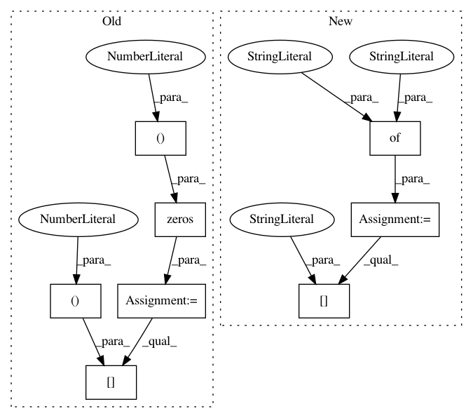

2d065c2bb610aeff08ed117ec238546916d09633,keras_retinanet/preprocessing/kitti.py,KittiGenerator,load_annotations,#KittiGenerator#Any#,139
Before Change
annotations = self.image_data[image_index]
boxes = np.zeros((len(annotations), 5))
for idx, ann in enumerate(annotations):
boxes[idx, 0] = float(ann["x1"])
boxes[idx, 1] = float(ann["y1"])
boxes[idx, 2] = float(ann["x2"])
boxes[idx, 3] = float(ann["y2"])
boxes[idx, 4] = int(ann["cls_id"])
return boxes
After Change
Load annotations for an image_index.
image_data = self.image_data[image_index]
annotations = {"labels": np.empty((len(image_data),)), "bboxes": np.empty((len(image_data), 4))}
for idx, ann in enumerate(image_data):
annotations["bboxes"][idx, 0] = float(ann["x1"])
annotations["bboxes"][idx, 1] = float(ann["y1"])
annotations["bboxes"][idx, 2] = float(ann["x2"])
annotations["bboxes"][idx, 3] = float(ann["y2"])
annotations["labels"][idx] = int(ann["cls_id"])
return annotations
In pattern: SUPERPATTERN
Frequency: 3
Non-data size: 8
Instances
Project Name: fizyr/keras-retinanet
Commit Name: 2d065c2bb610aeff08ed117ec238546916d09633
Time: 2018-10-09
Author: h.gaiser@fizyr.com
File Name: keras_retinanet/preprocessing/kitti.py
Class Name: KittiGenerator
Method Name: load_annotations
Project Name: fizyr/keras-retinanet
Commit Name: 65094fc108c9db13fde4cbd5ab99491413842007
Time: 2018-10-08
Author: h.gaiser@fizyr.com
File Name: keras_retinanet/preprocessing/coco.py
Class Name: CocoGenerator
Method Name: load_annotations
Project Name: fizyr/keras-retinanet
Commit Name: 65094fc108c9db13fde4cbd5ab99491413842007
Time: 2018-10-08
Author: h.gaiser@fizyr.com
File Name: keras_retinanet/preprocessing/csv_generator.py
Class Name: CSVGenerator
Method Name: load_annotations